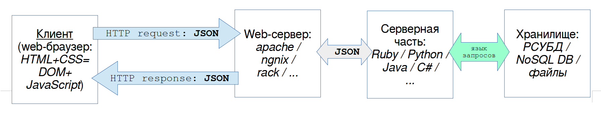
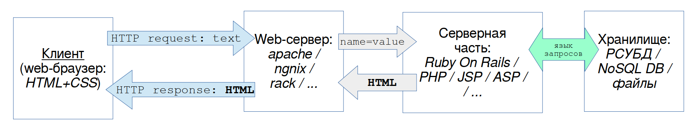

Содержание
Многие программы разрабатываются в виде «web-приложения» (web
application) или приложения с «web-интерфейсом» (Web
User Interface = WebUI = WUI), то есть
приложения, которое состоит из 2-х частей: клиентской и серверной.
В такой распределённой программной системе web-браузер
выполняет роль клиента, который обменивается данными с сервером.
Клиентская часть web-приложения — это то, что
обрабатывается браузером: HTML, CSS, JavaScript.
Cерверная часть web-приложения состоит из
web-сервера
(
web-server), который организует обмен с
клиентской частью по протоколу HTTP и серверной прикладной программы (
application server program), которую вызывает
web-сервер для обработки информации от клиента.
Есть 2 основных подхода, которые применяются при разработке
web-приложений, назовём их так: (1) «клиент на
JavaScript» и
(2) «динамический web-сайт».
Вот сравнение этих 2-х подходов.
| Где |
Что |
Подход # 1 |
Подход # 2 |
| «клиент на JavaScript» |
«динамический web-сайт» |
| Клиент / Сервер |
Результат работы |
HTML-страница, динамически изменяемая клиентом на JavaScript |
Готовые страницы HTML, динамически формируемые на сервере |
| На клиентской стороне (в web-браузере) |
Средства для отображения данных |
(HTML + CSS)
= DOM ← JavaScript |
HTML + CSS |
| Средства для запроса данных с сервера |
JavaScript (AJAX)
→ запросы HTTP |
Средства HTML: ссылки, формы →
запросы HTTP |
| Формат передачи данных |
JSON (подходит больше всего) в теле
запроса |
строки "имя=значение" в запросе GET или в теле запроса POST |
| Используемые методы HTTP |
Операции CRUD* по REST:
POST / PUT,
GET, PATCH, DELETE |
Поддерживаемые браузерами в <a href> и
<form>: GET, POST |
| На серверной стороне (в сервере приложений) |
Обработка входных данных |
Преобразование из JSON в объекты
языка: Hash / Dictionary и Array
/ List |
Разбор текста: имя=значение |
| Обработка полученных данных (на сервере) |
программы (формирования данных для ответа) |
программы (формирования данных для ответа) + обработчик шаблонов (для генерирования HTML-документа) |
| Способ формирования ответа для клиента |
Данные преобразуются в JSON |
В шаблон (ERB, PHP,
JSP, ASP,
...) вставляются вычисленные данные, чтобы получить готовый HTML |
| Формат ответа |
JSON |
HTML |
| На клиентской стороне (в web-браузере) — после
получения ответа с сервера |
Действия браузера |
Страница не заменяется (не загружается новая страница взамен предыдущей),
но её содержиное программно изменяется. |
Загружается новая страница (сформированная на сервере на основе
шаблона), заменяя предыдущую. |
| Действия программы на JavaScript |
Получает с сервера данные (JSON) и
динамически изменяет представление данных на странице (и элементы
интерфейса), обращаясь к объектам DOM. |
Обработка на JavaScript не требуется,
т. к. страница подготовлена на сервере в окончательном виде. |
|
Особенности |
Браузер выступает в качестве настоящего клиентского приложения,
в котором выполняется код на JavaScript.
В клиентской части организуется обмен данными с сервером,
отображение данных в WUI (и, возможно, их форматирование).
Клиент может работать с разными серверами, соблюдающими API
и формат обмена данными.
В серверной части производится обработка данных по запросу
клиента: чтение из хранилища, запись в хранилище, преобразование
информации в соответствии с бизнес-правилами. |
Все действия по обработке и форматированию данных выполняются на
стороне сервера.
Результат обработки оформляется в виде выходной HTML-страницы
(WUI), которая отправляется клиенту. Генерирование страниц обычно
делается с помощью шаблонов.
Браузер нужен только для отображения готовой страницы. |
|
Преимущества |
1. Клиентскую и серверную часть можно разрабатывать независимо.
2. Клиентскую и серверную часть можно тестировать независимо с
помощью API.
3. Серверная часть может через API взаимодействовать с разными
клиентами: браузером, мобильным приложением, внешней программной
системой.
4. Закладывается основа для удобного развития приложения, т. к.
связность между клиентом и сервером минимизирована.
|
Многие фреймворки поддерживают этот подход.
|
|
Недостатки |
Для выполнения в браузере программ на JavaScript требуется
более производительный компьютер или мобильное устройство. |
Серверная часть используется для формирования клиентской части:
это сильная связность компонентов, мешающая дальнейшему развитию
приложения. |
* CRUD = Create, Read, Update, Delete ~ основные операции для манипулирования данными: создать (добавить),
прочитать (выбрать), изменить (заменить), удалить (уничтожить).


Элементы обеих подходов могут сочетаться.
Будет подробно рассмотрен 1-й подход.
Обработка данных на стороне клиента выполняется в web-браузере с помощью
набора программ на языке
JavaScript: они
динамически изменяют представление данных в браузере, манипулируя с
объектами
DOM (Document Object Model) и
BOM (Browser Object Model).
Программный обмен данными с web-сервером выполняется с использованием
технологии
AJAX. При этом данные удобнее всего
представлять в формате
JSON. Обращение к
ресурсам на сервере практично организовать в соответствии с архитектурным
стилем
REST.
Жизненный цикл данных в клиентской части такой:
- Web-браузер обращается к web-серверу по определённому URL и получает
HTML-страницу.
- Браузер загружает необходимые файлы, указанные в HTML: стилевые
таблицы (.css) и программы на JavaScript (.js).
- Браузер выполняет программу на JavaScript,
которая динамически настраивает WUI,
изменяя элементы в DOM.
- В ответ на действия пользователя выполняется программа, которая
отправляет запрос на web-сервер, в котором содержатся данные в формате
JSON и
указание, что с ними нужно сделать: изменить, добавить удалить или
прочитать из хранилища на сервере.
- Программа получает от web-сервера ответ: сообщение о результате
выполненных действий + данные в формате JSON.
- Программа отображает результат и полученные данные в WUI
путём изменения элементов в DOM.
Cерверная часть web-приложения — это web-сервер,
который организует обмен с клиентской частью, и серверное приложение,
которое обрабатывает информациию от клиента.
Web-сервер играет в web-приложении роль внешнего программного слоя для
организации ввода-вывода данных: принимает полученный от клиента HTTP-запрос,
отдаёт его на обработку серверной прикладной программе, а полученные от
него данные отправляет клиенту в виде HTTP-ответа.
Обычно применяется независимый web-сервер (ngnix,
Apache и т. п.), часто используется web-сервер
из программного каркаса (например, puma в Rails).
Серверные компоненты web-приложения — это либо готовый сервер
приложений (application server), либо
прикладная программная система, которой web-сервер передаёт данные на
обработку и от которой он получает данные для отправки клиенту.
Серверная прикладная программа обычно написана на
компилируемом (
Kotlin, Java,
C#, ...) или на скриптовом языке программирования (
Ruby,
Python,
PHP,
Perl,
node.js, ...).
Часто при реализации серверного приложения применяются программные
каркасы
(
frameworks), например:
Spring
(
Java),
ASP.NET (
C#),
Ruby on Rails (
Ruby),
Django (
Python),
Laravel (
PHP),
Express (
node.js).
Маршрутизация данных (data
routing).
Программный компонент, выполняющий функцию диспетчера (
dispatcher),
получает от web-сервера
HTTP-запрос, в котором
(в соответствии с правилами
REST) выделяет
следующие данные:
| Часть запроса |
Вывод |
Пример |
| HTTP-метод |
Действие, которое нужно
выполнить с ресурсом, которому можно сопоставить метод для
обработки данных из запроса. |
GET |
| URI |
Идентификатор ресурса, которому
можно сопоставить программный компонент (объект определённого
класса), которая содержит требуемый метод обработки данных. |
/books |
| Заголовки |
- Представление (формат, кодировка)
входных и выходных данных.
- Идентификатор сеанса (session_id),
по которому можно определить пользователя, который его открыл,
его роль и связанные с ней права доступа к данным.
|
Content-Type: application/json; charset=utf-8
\r\n
{"session_id": "47538da6-8c6a-46cb-a9ca-a1b62bd23d39"}
|
| Тело запроса |
Данные для обработки. |
{"action":"list",
"resource":"books", "class":"Book", "data":{}, "sort":"title", "role_id": 2} |
Для обработки данных нужно, чтобы компонент-диспетчер умел направлять
данные на соответствующие компоненты. Для этого необходимо, чтобы во
входных данных находились достаточные указания (имена ресурсов, классов и
пользовательские операции), чтобы выбрать подходящий компонент.
Обработка данных (data
processing).
Обработкой данных занимаются компоненты-интеракторы
(interactor), реализующие логику приложения:
каждый интерактор реализует свой сценарий использования (use
case). Они при необходимости обращаются к компонентам других
уровней: бизнес-объектам и адаптерам ввода-вывода.
Программный компонент получает от «диспетчера» данные для
обработки в виде модели в независимом от языка представлении, например, в
виде ассоциативного массива (хэша) или массива хэшей.В таком же виде
перемещаются данные между компонентами и отправляются клиенту.
Для обработки простых операций манипулирования объектами
достаточно методов из набора CRUD (Create,
Read, Update, Delete). Этих средств достаточно для актуализации
данных в «справочниках» (списках объектов, которые не содержат ссылок на
другие объекты).
Для сложных объектов или сценариев требуется выполнить
последовательность действий. Например, при добавлении пользователя нужно
отработать 2 действия: отправить запрос на регистрацию (register)
и подтвердить пользователя (verify), а для
предоставления данных о книге (Book) нужно
собрать её из объектов разных классов (Author, PublishingHouse, Category,
...).
Ввод-вывод данных для долговременного хранения организуется с помощью
интерфейсных компонентов-адаптеров (adapter),
которые унифицируют доступ к хранилищу данных.
При этом подходе можно безболезненно перейти на использование другого хранилища,
не затрагивая компоненты уровня логики приложения.
Для хранения данных используются внешние программные
компоненты. Часто для хранения данных применяется реляционная СУБД (PostgreSQL, MySQL и т.
п.), которая может размещаться на одном физическом узле сети вместе с
web-сервером или на отдельном узле. Для небольших объёмов данных можно
использовать локальную встраиваемую СУБД (SQLite,
BDE, FirebirdSQL, dBASE).
В качестве хранилища также может применяться нереляционные базы данных (no-SQL DB, OO-DB),
векторные базы данных, «плоские» файлы со структурированными данными (JSON,
CSV, YAML), а также сетевые сервисы..
При 1-м подходе к разработке web-приложений обмен данными между клиентом и
сервером выполняется через API (application programming
interface). Поэтому серверная прикладная программа через этот API
может взаимодействовать с внешними программами, которые играют роль
программных клиентов web-приложения вместо web-браузера. Через этот API
удобно производить автоматизированное тестирование web-приложения.
Q: Почему подробно объясняется подход №1?
A: Он больше соответствует понятию
web-приложение. Важно, что клиент (программа на JavaScript
в браузере) общается с сервером по API: это формализует взаимодействие,
распараллеливает разработку, облегчает тестирование.
При таком подходе с web-сервером по API может
взаимодействовать не только браузер, но и внешние сервисы.
Содержание